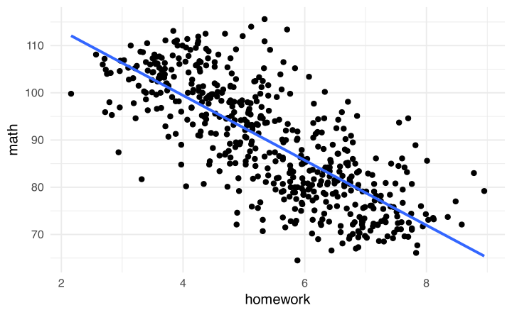
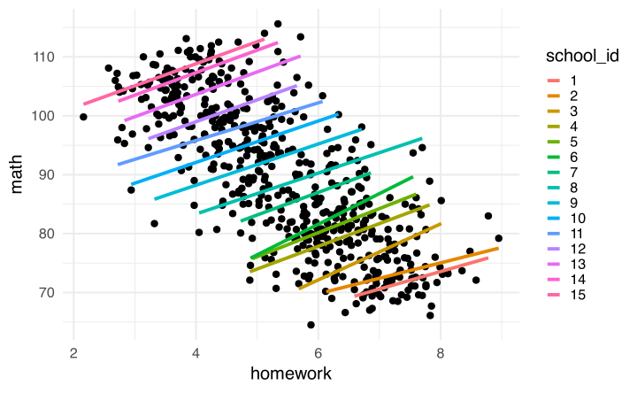
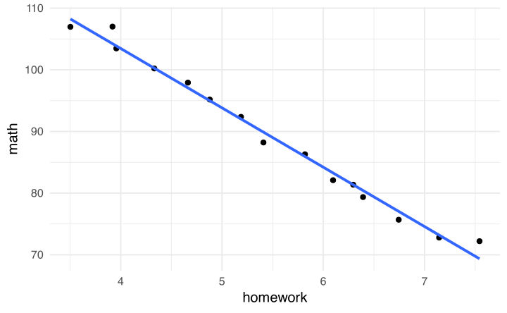
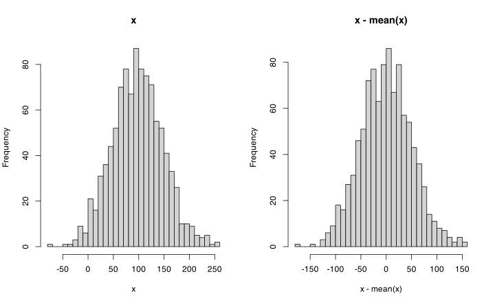
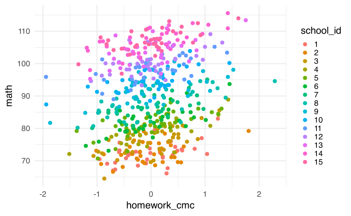
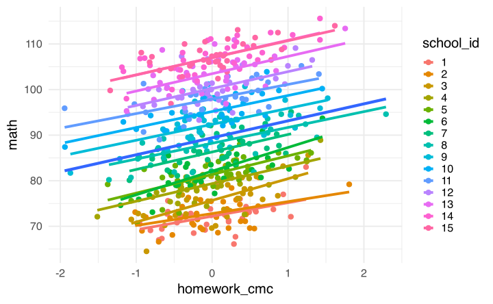
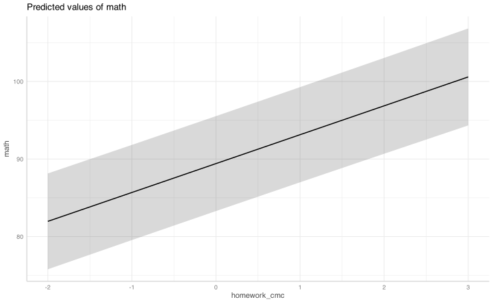
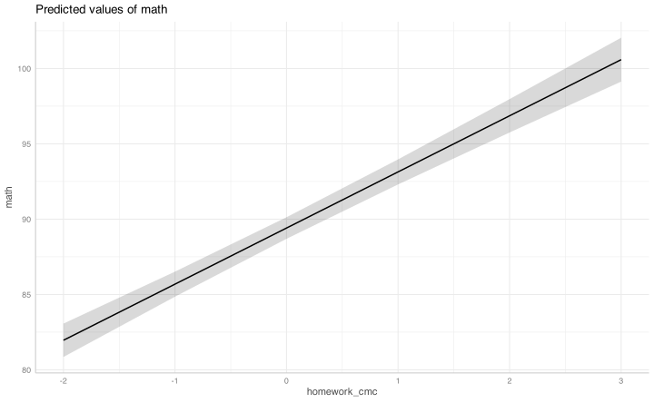
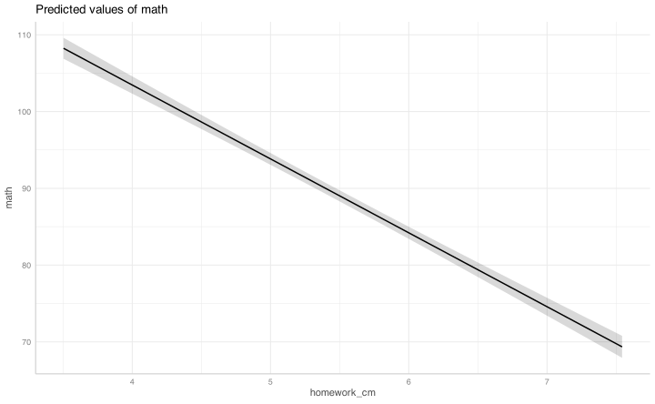

![]()
library(lme4)
library(ggplot2)
library(dplyr)
library(tidyr)
library(glmmTMB)
library(kableExtra)
library(lmerTest)
library(ggeffects)
library(modelsummary)Predittori a vari livelli
dat <- readRDS(here::here("data/school.rds"))Il dataset
In questa esercitazione utilizziamo un dataset relativo al rendimento in matematica di studenti appartenenti a diverse scuole.
Il contesto è quello di uno studio educativo in cui si vuole analizzare la relazione tra alcune caratteristiche degli studenti, alcune caratteristiche delle scuole e il rendimento scolastico. Ogni riga del dataset rappresenta uno studente. Gli studenti sono raggruppati in scuole; quindi le osservazioni non sono completamente indipendenti, perché studenti della stessa scuola condividono lo stesso contesto scolastico.
Il dataset è pensato per introdurre in modo semplice l’analisi di dati con struttura gerarchica.
Struttura dei dati
Il dataset contiene 525 studenti appartenenti a 15 scuole.
str(dat)tibble [525 × 6] (S3: tbl_df/tbl/data.frame)
$ school_id : Factor w/ 15 levels "1","2","3","4",..: 1 1 1 1 1 1 1 1 1 1 ...
$ ses : num [1:525] 2 2 2 2 2 2 2 2 2 2 ...
$ school_climate: num [1:525] 5.6 5.6 5.6 5.6 5.6 5.6 5.6 5.6 5.6 5.6 ...
$ motivation : num [1:525] 7.8 6.9 6.5 5.2 7 5.8 6 4.5 8 6.2 ...
$ homework : num [1:525] 7.71 7.91 7.94 7.76 6.59 7.13 7.45 7.08 7.61 6.88 ...
$ math : num [1:525] 72.5 76 71.7 71.3 70.5 72.3 69.2 70.8 79.5 69.4 ...
Le variabili disponibili sono:
| Variabile | Livello | Descrizione |
|---|---|---|
school_id |
Scuola | Codice identificativo della scuola |
ses |
Scuola | Indicatore del contesto socio-economico medio della scuola, su scala da 1 a 10 |
school_climate |
Scuola | Indicatore del clima scolastico medio, su scala da 1 a 10 |
motivation |
Studente | Motivazione individuale allo studio, su scala da 1 a 10 |
homework |
Studente | Ore settimanali dedicate ai compiti di matematica |
math |
Studente | Punteggio in matematica |
Descrizione delle variabili
Scuola
La variabile school_id identifica la scuola di appartenenza dello studente. Poiché più studenti appartengono alla stessa scuola, il dataset ha una struttura a due livelli:
- studenti;
- scuole.
Questa struttura è importante perché studenti appartenenti alla stessa scuola possono essere più simili tra loro rispetto a studenti appartenenti a scuole diverse.
Contesto socio-economico della scuola
La variabile ses misura il contesto socio-economico medio della scuola su una scala da 1 a 10:
- valori bassi indicano un contesto più svantaggiato;
- valori alti indicano un contesto più avvantaggiato.
Questa è una variabile a livello di scuola: tutti gli studenti della stessa scuola hanno lo stesso valore di ses.
Clima scolastico
La variabile school_climate misura il clima scolastico medio della scuola su una scala da 1 a 10. Valori più alti indicano un clima scolastico più positivo. Anche questa è una variabile a livello di scuola, quindi assume lo stesso valore per tutti gli studenti della stessa scuola.
Motivazione individuale
La variabile motivation misura la motivazione individuale allo studio su una scala da 1 a 10. Valori più alti indicano una maggiore motivazione. A differenza di ses e school_climate, questa variabile varia tra studenti anche all’interno della stessa scuola.
Compiti di matematica
La variabile homework indica il numero di ore settimanali dedicate ai compiti di matematica. Questa variabile è misurata a livello individuale: studenti della stessa scuola possono dedicare quantità diverse di tempo ai compiti.
Punteggio in matematica
La variabile math è il punteggio ottenuto dagli studenti in matematica. In questa esercitazione viene trattata come variabile dipendente principale.
Prime righe del dataset
head(dat)# A tibble: 6 × 6
school_id ses school_climate motivation homework math
<fct> <dbl> <dbl> <dbl> <dbl> <dbl>
1 1 2 5.6 7.8 7.71 72.5
2 1 2 5.6 6.9 7.91 76
3 1 2 5.6 6.5 7.94 71.7
4 1 2 5.6 5.2 7.76 71.3
5 1 2 5.6 7 6.59 70.5
6 1 2 5.6 5.8 7.13 72.3
Obiettivo dell’analisi
L’obiettivo generale è studiare la relazione tra rendimento in matematica e alcune variabili individuali e scolastiche.
In particolare, possiamo porci domande come:
- gli studenti più motivati ottengono punteggi più alti in matematica?
- gli studenti che dedicano più tempo ai compiti ottengono punteggi più alti?
- le scuole con contesto socio-economico più favorevole hanno punteggi medi più alti?
- il clima scolastico è associato al rendimento medio degli studenti?
- quanto varia il rendimento tra studenti della stessa scuola e tra scuole diverse?
Queste domande richiedono attenzione alla struttura gerarchica del dataset, perché alcune variabili descrivono gli studenti, mentre altre descrivono le scuole.
Predittori a diversi livelli
Una distinzione importante riguarda la tipologia di predittori. Con una struttura multilivello a due livelli, come in questo caso, possiamo avere variabili a livello 1, cioè a livello dello studente, e variabili a livello 2, cioè a livello della scuola.
head(dat)# A tibble: 6 × 6
school_id ses school_climate motivation homework math
<fct> <dbl> <dbl> <dbl> <dbl> <dbl>
1 1 2 5.6 7.8 7.71 72.5
2 1 2 5.6 6.9 7.91 76
3 1 2 5.6 6.5 7.94 71.7
4 1 2 5.6 5.2 7.76 71.3
5 1 2 5.6 7 6.59 70.5
6 1 2 5.6 5.8 7.13 72.3
Effetti di predittori a livelli diversi
Immaginiamo di voler misurare l’impatto del carico di compiti, homework, sulla performance in matematica. Intuitivamente, ci si potrebbe aspettare che, all’aumentare del carico di compiti, migliori la performance. Proviamo a vedere graficamente questa relazione:
dat |>
ggplot(aes(x = homework, y = math)) +
geom_point() +
# questa è una regressione con lm, solo grafica
geom_smooth(method = "lm", se = FALSE)
L’associazione sembra negativa: maggiore è il carico di compiti, minori sono i punteggi. Potrebbe esserci una spiegazione funzionale anche per questo risultato, ma prima conviene osservare l’associazione separatamente per ogni cluster, cioè per ogni scuola:
dat |>
ggplot(aes(x = homework, y = math)) +
geom_point() +
# questa è una regressione con lm, solo grafica
geom_smooth(aes(color = school_id), method = "lm", se = FALSE)
La relazione cambia completamente. Dentro ogni scuola sembra esserci un effetto positivo del carico di compiti, mentre complessivamente sembra esserci un effetto negativo. Questo pattern è noto come paradosso di Simpson e mostra la complessità che possono assumere i dati organizzati su più livelli.
Immaginiamo ora di analizzare superficialmente questi dati aggregandoli per scuola. Calcoliamo quindi la media del carico di compiti e del punteggio in matematica per ogni scuola e poi osserviamo la relazione tra queste due quantità.
dat |>
summarise(
math = mean(math),
homework = mean(homework),
.by = c(school_id)
) |>
ggplot(aes(x = homework, y = math)) +
geom_point() +
geom_smooth(method = "lm", se = FALSE)
Guardando solo il pattern aggregato, concluderemmo che la relazione è negativa: all’aumentare dei compiti assegnati diminuiscono le performance in matematica.
Cosa sta succedendo? Sostanzialmente questo è un caso in cui l’effetto tra cluster è diverso dall’effetto dentro i cluster. In ogni scuola, all’aumentare dei compiti, almeno graficamente, la performance migliora. Invece, tra scuole, maggiori quantità medie di compiti sono associate a performance medie inferiori.
Within e between effects
Possiamo chiamare effetto within l’effetto dentro ogni cluster. In questo caso, l’effetto within descrive come varia la performance in matematica degli studenti al netto delle differenze tra scuole.
Possiamo invece chiamare effetto between l’effetto tra cluster. In questo caso, l’effetto between descrive come varia la performance media in matematica tra scuole diverse.
In termini di modello, è importante riuscire a separare questi due effetti. Per farlo è sufficiente trasformare la variabile homework con diverse forme di centramento.
NoteCentramento di una variabile
Centrare una variabile significa sottrarre una costante. Solitamente si centra sulla media o su un altro valore significativo. Se sottraiamo a tutti i valori una costante, quella costante diventa il nuovo zero e i valori vengono espressi come deviazioni positive o negative rispetto a quello zero.
Il centramento non cambia la variabilità né la forma della distribuzione della variabile: produce semplicemente uno spostamento dei valori.
par(mfrow = c(1, 2))
x <- rnorm(1e3, 100, 50)
hist(x, breaks = 30, main = "x")
hist(x - mean(x), breaks = 30, main = "x - mean(x)")
Nella nuova variabile, un valore pari a 50 significa che quell’osservazione è 50 unità sopra la media; un valore pari a -20 significa che è 20 unità sotto la media.
Cluster mean centering
Per isolare l’effetto within dobbiamo rimuovere l’effetto between. In altri termini, dobbiamo rimuovere dai dati il fatto che scuole diverse possono avere carichi medi di compiti diversi.
La modalità più utile è centrare ogni valore rispetto alla media del suo cluster di riferimento: questa operazione viene chiamata cluster mean centering (CMC). Indicando con \(h_{ij}\) il valore di homework dello studente \(i\) nella scuola \(j\), e con \(\bar{h}_{.j}\) la media di homework nella scuola \(j\), definiamo:
\[ h^{\text{CMC}}_{ij} = h_{ij} - \bar{h}_{.j} \]
Vediamo graficamente cosa succede:
dat <- dat |>
# calcolo la media di ogni cluster
mutate(homework_cm = mean(homework), .by = c(school_id)) |>
mutate(homework_cmc = homework - homework_cm)dat |>
ggplot(aes(x = homework_cmc, y = math, color = school_id)) +
geom_point()
In questo modo abbiamo rimosso le differenze sistematiche tra scuole. Guardate cosa succede se stimiamo la relazione complessiva tra homework_cmc e math:
dat |>
ggplot(aes(x = homework_cmc, y = math)) +
geom_point(aes(color = school_id)) +
geom_smooth(method = "lm", se = FALSE, lwd = 2) +
geom_smooth(aes(color = school_id), method = "lm", se = FALSE)
Ora la relazione complessiva, cioè la linea blu spessa, è positiva e completamente diversa rispetto a prima. Questo è ciò che intendiamo con effetto within.
Per inserire questa distinzione nel modello possiamo creare due versioni della variabile homework: una che rappresenta la media del cluster e una che rappresenta il valore centrato sulla media del cluster. Sono le variabili homework_cm e homework_cmc create prima.
head(dat[, c("school_id", "homework", "homework_cm", "homework_cmc")])# A tibble: 6 × 4
school_id homework homework_cm homework_cmc
<fct> <dbl> <dbl> <dbl>
1 1 7.71 7.54 0.167
2 1 7.91 7.54 0.367
3 1 7.94 7.54 0.397
4 1 7.76 7.54 0.217
5 1 6.59 7.54 -0.953
6 1 7.13 7.54 -0.413
Prendiamo, ad esempio, l’osservazione 5 e l’osservazione 520:
dat[c(5, 520), c("school_id", "homework", "homework_cm", "homework_cmc")]# A tibble: 2 × 4
school_id homework homework_cm homework_cmc
<fct> <dbl> <dbl> <dbl>
1 1 6.59 7.54 -0.953
2 15 2.68 3.50 -0.823
Questi studenti appartengono alle scuole 1 e 15, hanno un carico di compiti di circa 7 e 3 ore, e questo corrisponde in entrambi i casi a circa 1 ora in meno rispetto alla media del loro cluster. Quindi questi due studenti hanno un carico assoluto di studio diverso, ma sono alla stessa distanza rispetto alla media della propria scuola.
Modelli con predittori centrati
Possiamo usare la variabile homework_cmc nel modello per stimare la retta blu del grafico precedente, cioè l’effetto dell’incremento nello studio al netto delle differenze medie di studio tra scuole.
# modello senza centering
fit1 <- lmer(math ~ homework + (1 | school_id), data = dat)
# modello con centering dentro il cluster
fit2 <- lmer(math ~ homework_cmc + (1 | school_id), data = dat)
summary(fit1)Linear mixed model fit by REML. t-tests use Satterthwaite's method [
lmerModLmerTest]
Formula: math ~ homework + (1 | school_id)
Data: dat
REML criterion at convergence: 2751
Scaled residuals:
Min 1Q Median 3Q Max
-2.7595 -0.6157 -0.0038 0.6755 2.8332
Random effects:
Groups Name Variance Std.Dev.
school_id (Intercept) 276.16 16.62
Residual 9.14 3.02
Number of obs: 525, groups: school_id, 15
Fixed effects:
Estimate Std. Error df t value Pr(>|t|)
(Intercept) 69.343 4.450 16.038 15.6 4.2e-11 ***
homework 3.676 0.215 512.390 17.1 < 2e-16 ***
---
Signif. codes: 0 '***' 0.001 '**' 0.01 '*' 0.05 '.' 0.1 ' ' 1
Correlation of Fixed Effects:
(Intr)
homework -0.263
summary(fit2)Linear mixed model fit by REML. t-tests use Satterthwaite's method [
lmerModLmerTest]
Formula: math ~ homework_cmc + (1 | school_id)
Data: dat
REML criterion at convergence: 2742
Scaled residuals:
Min 1Q Median 3Q Max
-2.7685 -0.6262 -0.0071 0.6853 2.8415
Random effects:
Groups Name Variance Std.Dev.
school_id (Intercept) 145.35 12.06
Residual 9.14 3.02
Number of obs: 525, groups: school_id, 15
Fixed effects:
Estimate Std. Error df t value Pr(>|t|)
(Intercept) 89.412 3.116 14.000 28.7 7.7e-14 ***
homework_cmc 3.725 0.215 509.000 17.3 < 2e-16 ***
---
Signif. codes: 0 '***' 0.001 '**' 0.01 '*' 0.05 '.' 0.1 ' ' 1
Correlation of Fixed Effects:
(Intr)
homewrk_cmc 0.000
plot(ggeffect(fit2))
Poiché in entrambi i modelli teniamo conto delle differenze tra scuole tramite l’intercetta random, viene stimata una relazione positiva, anche se leggermente diversa. Vediamo invece cosa accade con lm, che ignora il clustering: la relazione è negativa, come avevamo visto nel grafico marginale.
fit3 <- lm(math ~ homework, data = dat)
summary(fit3)
Call:
lm(formula = math ~ homework, data = dat)
Residuals:
Min 1Q Median 3Q Max
-22.412 -5.558 0.069 4.651 25.713
Coefficients:
Estimate Std. Error t value Pr(>|t|)
(Intercept) 126.929 1.455 87.2 <2e-16 ***
homework -6.873 0.259 -26.6 <2e-16 ***
---
Signif. codes: 0 '***' 0.001 '**' 0.01 '*' 0.05 '.' 0.1 ' ' 1
Residual standard error: 8.01 on 523 degrees of freedom
Multiple R-squared: 0.574, Adjusted R-squared: 0.573
F-statistic: 706 on 1 and 523 DF, p-value: <2e-16
Quindi fit2 rappresenta una stima dell’effetto within. Al netto del cluster, all’aumentare di un’ora di studio la performance in matematica aumenta. Questo succede in media, ma, come abbiamo visto nel grafico, il pattern è abbastanza consistente tra scuole.
Separare effetto within ed effetto between
Possiamo anche includere l’effetto between nel modello, separando chiaramente i due aspetti di homework. Per farlo dobbiamo inserire come predittore homework_cm, cioè la variabile che contiene la media di homework in ogni scuola. Questa variabile è rilevante solo a livello 2, cioè a livello della scuola.
Il modello può essere scritto in forma semplificata come:
\[ \text{math}_{ij} = \beta_0 + \beta_W h^{\text{CMC}}_{ij} + \beta_B \bar{h}_{.j} + u_{0j} + \varepsilon_{ij} \]
dove:
- \(\beta_W\) è l’effetto within;
- \(\beta_B\) è l’effetto between;
- \(u_{0j}\) è l’intercetta random della scuola \(j\);
- \(\varepsilon_{ij}\) è il residuo individuale.
fit4 <- lmer(math ~ homework_cmc + homework_cm + (1 | school_id), data = dat)
summary(fit4)Linear mixed model fit by REML. t-tests use Satterthwaite's method [
lmerModLmerTest]
Formula: math ~ homework_cmc + homework_cm + (1 | school_id)
Data: dat
REML criterion at convergence: 2681
Scaled residuals:
Min 1Q Median 3Q Max
-2.840 -0.621 -0.002 0.680 2.833
Random effects:
Groups Name Variance Std.Dev.
school_id (Intercept) 1.73 1.32
Residual 9.14 3.02
Number of obs: 525, groups: school_id, 15
Fixed effects:
Estimate Std. Error df t value Pr(>|t|)
(Intercept) 141.972 1.693 13.000 83.8 <2e-16 ***
homework_cmc 3.725 0.215 509.000 17.3 <2e-16 ***
homework_cm -9.628 0.303 13.000 -31.8 1e-13 ***
---
Signif. codes: 0 '***' 0.001 '**' 0.01 '*' 0.05 '.' 0.1 ' ' 1
Correlation of Fixed Effects:
(Intr) hmwrk_cmc
homewrk_cmc 0.000
homework_cm -0.977 0.000
plot(ggeffect(fit4))$homework_cmc

$homework_cm

In questo modello abbiamo stimato chiaramente i due pattern. All’aumentare delle ore di studio aumentano le performance individuali al netto delle differenze tra scuole. Tra scuole, invece, le performance medie sono inferiori all’aumentare delle ore medie di studio.
Possiamo infine stimare anche la variabilità dell’effetto within. Dal grafico abbiamo visto che la relazione, seppure simile, cambia tra scuole. Possiamo quindi inserire l’effetto within come random slope.
fit5 <- lmer(math ~ homework_cmc + homework_cm + (homework_cmc | school_id), data = dat)
summary(fit5)Linear mixed model fit by REML. t-tests use Satterthwaite's method [
lmerModLmerTest]
Formula: math ~ homework_cmc + homework_cm + (homework_cmc | school_id)
Data: dat
REML criterion at convergence: 2680
Scaled residuals:
Min 1Q Median 3Q Max
-2.8916 -0.6068 -0.0116 0.6728 2.8356
Random effects:
Groups Name Variance Std.Dev. Corr
school_id (Intercept) 1.7269 1.314
homework_cmc 0.0352 0.188 -1.00
Residual 9.1280 3.021
Number of obs: 525, groups: school_id, 15
Fixed effects:
Estimate Std. Error df t value Pr(>|t|)
(Intercept) 141.978 1.661 13.291 85.5 <2e-16 ***
homework_cmc 3.723 0.220 113.461 16.9 <2e-16 ***
homework_cm -9.629 0.297 13.267 -32.4 5e-14 ***
---
Signif. codes: 0 '***' 0.001 '**' 0.01 '*' 0.05 '.' 0.1 ' ' 1
Correlation of Fixed Effects:
(Intr) hmwrk_cmc
homewrk_cmc -0.057
homework_cm -0.976 0.012
optimizer (nloptwrap) convergence code: 0 (OK)
boundary (singular) fit: see help('isSingular')
In questo caso, probabilmente la variabilità della slope è molto piccola e il modello fatica a stimarla.
Esercizio
Provate, esplorando il dataset, a capire perché emerge questa relazione inversa tra scuole e dentro le scuole. C’è una variabile nel dataset che lo spiega chiaramente.
Bibliografia
Enders, C. K., & Tofighi, D. (2007). Centering predictor variables in cross-sectional multilevel models: a new look at an old issue. Psychological Methods, 12, 121–138. https://doi.org/10.1037/1082-989X.12.2.121